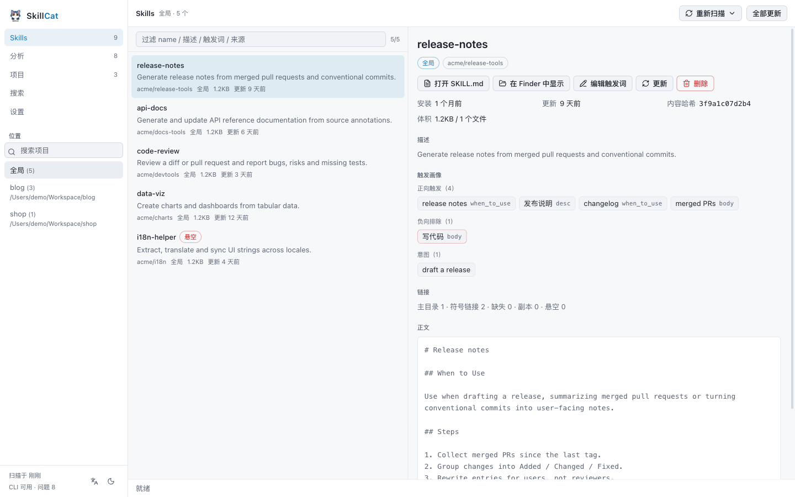
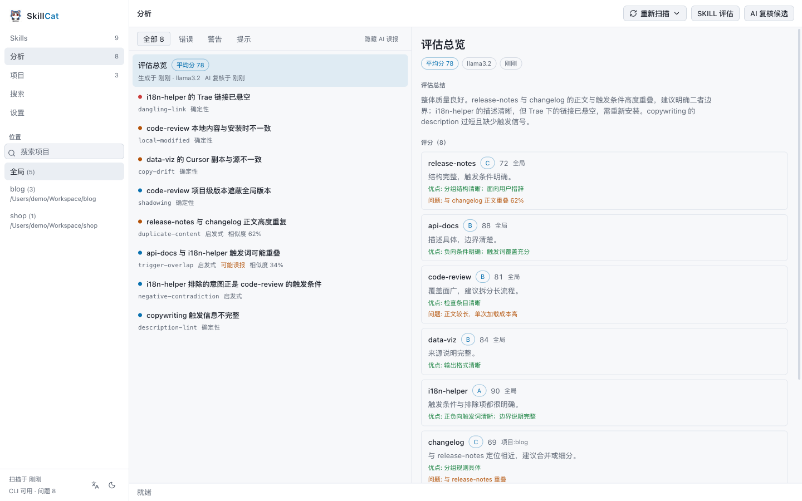
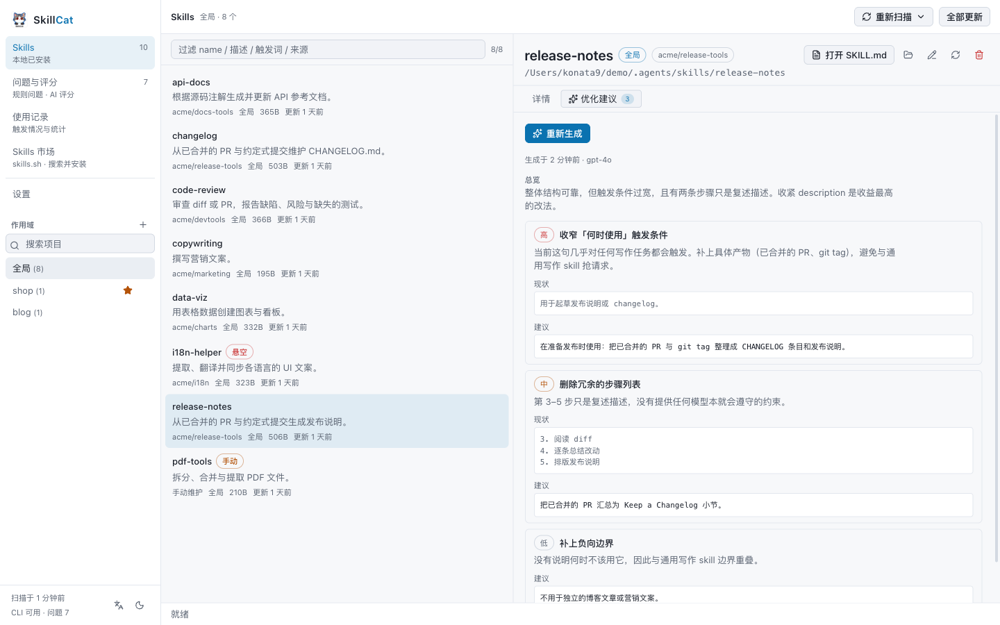
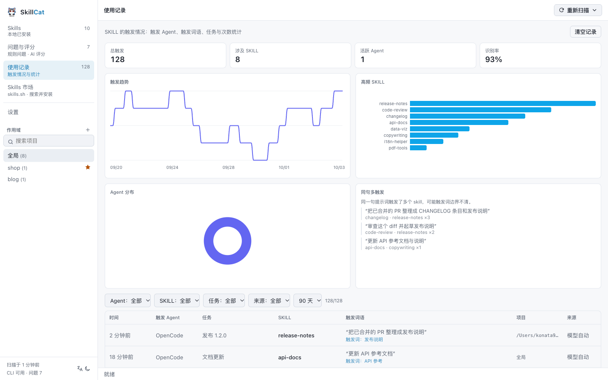
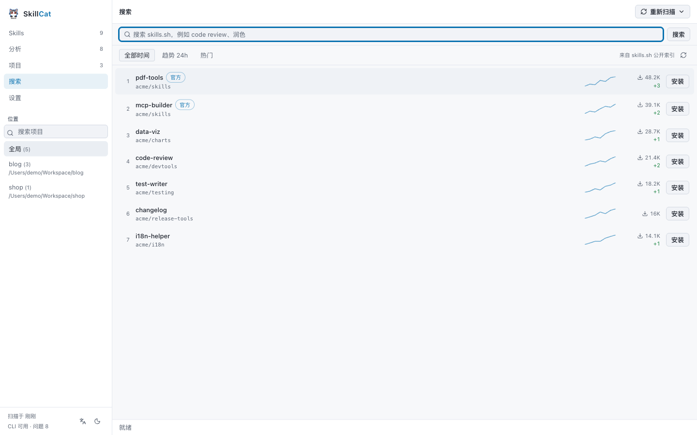

清单覆盖 90+ 已知 agent
扫描全局、项目级与自定义目录，报告每个 skill 的来源、锁元数据，以及真实的链接状态： 符号链接、悬空，或副本漂移。
core本地优先的 agent skill 管理器
清点你机器上的每一个 agent skill，找出问题，安全地管理它们。SkillCat 说明每个 skill 的触发条件，把证据摆在每个结论旁边，并把你自己的模型变成只读优化建议—— 你能判断的改法，而不是它擅自做的修改。
---
name: release-notes
description: 根据已合并的 PR 生成发布说明
when_to_use: 起草发布说明, changelog
---
## When to Use
起草发布说明时，或把已合并的 PR
整理成面向用户的说明时使用。覆盖 90+ 个已知 agent 目录
01 · SKILL 管理
SkillCat 读取跨 90+ 个 agent 的全局、项目级与自定义目录，展示每个 skill 的来源、 锁元数据与真实链接状态——符号链接、悬空还是漂移。
全局、项目级与自定义目录汇成一份列表，含来源、体积、更新时间和内容哈希。
符号链接、悬空链接、副本漂移还是本地修改——每个 skill 都有磁盘事实，而不是猜测。
确定性规则指出悬空链接、缺失锁记录、副本漂移、跨作用域遮蔽与来源冲突，每条都附上 触发它的证据。
根据 agent 标记在你的扫描根目录下发现项目。常来的可以收藏；注册表只保存路径。
安装、更新或删除都经由官方 skills CLI，进度流式 显示在抽屉里，带确认步骤，可随时取消。


清单 · 真实链接状态 · 问题与评分 · 每条结论附证据
02 · SKILL 优化建议
把你自己的模型变成单个 skill 的评审。它返回总览，加上按严重度排序、带 before/after 片段的建议，准则来自内置 rubric——不写回任何内容。
每条建议含标题、严重度（高/中/低）、理由，以及可选的 before/after 片段，让你判断这个改法，而不是盲信。
评审准则来自内置的 skill-optimizer；同名用户 skill 会被忽略，因此你 skill 里的提示词注入无法劫持评审。
结果持久化到 optimizer.json，按 skill 及其内容哈希 键控。再次打开不花钱，只有主动「重新生成」才再次消耗 token。

优化建议 Tab · 一次审查一个 skill
03 · SKILL 触发统计
SkillCat 提取每个 skill 的触发画像，还可以记录你的 agent 里真实触发了哪些 skill——含触发词语、任务与时间。统计只留在本机。
从 when_to_use、dispatch_intent、 description 与正文「When to Use」提取触发词。可在 sidecar 里手工标注；绝不改写 skill 文件。
安装 OpenCode bridge 来记录真实触发：哪个 skill、哪个词语、哪个任务、哪个会话。 默认关闭，一键卸载。
图表展示每日触发次数和触发最多的 skill；同一句话触发多个 skill 会被聚合为冲突信号。
触发词语属于提示词片段，只保存在本机配置目录，从不上传；保留天数由你控制，可一键清空。

使用记录 · 触发情况与统计
04 · 发现
浏览公开榜单或搜索索引，安装前先读 SKILL.md，然后直接装进当前作用域。
全部时间、趋势与热门三类排名，各带周安装量迷你折线。
关键词搜索，失败时回退到文本搜索，总有结果。
在应用内先查看 SKILL.md 与文件列表。

Skills 市场 · 搜索并安装
每一项能力都标注了它的判断来自哪里。磁盘事实是确定性的，相似度结果是启发式的， 并且明确说明这一点。
扫描全局、项目级与自定义目录，报告每个 skill 的来源、锁元数据，以及真实的链接状态： 符号链接、悬空，或副本漂移。
core根据扫描根下的 agent 标记发现项目，把常回访的钉住。注册表只存路径，删除条目不会 删除任何文件。
core确定性规则读取磁盘事实：悬空链接、锁记录缺失、副本漂移、本地改动、跨作用域遮蔽与 来源冲突。启发式则提示触发词重叠、负向矛盾与正文重复，并给出置信度与造成命中的共享词。
rules每次变更都把进度流式展示在抽屉里，有确认步骤，也可以取消。写入一律委托官方 skills CLI，因此只有一条安装路径，而不是两条。
cli用你的模型审查单个 skill，返回只读的改写建议，附带 before/after 片段， 评审准则来自内置的评审 skill。不会写回任何文件；结果会保存，只有主动重新生成才覆盖。
ai从 when_to_use、dispatch_intent、description 和 「When to Use」小节中提取每个 skill 的触发条件。你可以在 sidecar 里手工标注触发词， skill 文件永远不会被改写。
core安装 OpenCode bridge 记录真实触发了哪些 skill，含触发词语、任务，以及按天与按 skill 的 统计图表。一键即可卸载，数据只保存在本机配置目录。
optional浏览公共索引与全部时间、趋势、热门三个榜单，安装前先读一遍 SKILL.md，然后直接装进 当前作用域。
online用你自己的模型为每个 skill 评分，并判定预筛选出的重复与冲突候选对。结果带签名保存， 界面据此提示评估是否已经过期。
ai三步，其中只有第三步可能改动磁盘上的内容。
01
读取全局与项目锁文件，枚举 canonical 目录、每一个已知 agent 目录和你的自定义目录， 再对每个 skill 的内容做哈希。
02
对全部记录运行规则引擎，提取触发画像，在开销低的地方计算相似度，并合并你保存的标注。 整个过程不会向 skill 写回任何内容。
03
安装、更新或卸载 —— 每一步都经过确认、流式展示、可取消，并且由官方 skills CLI 执行，而不是由 SkillCat 自己执行。
读取
扫描只使用文件系统与锁文件，清点与分析 skill 不需要任何网络请求。
写入
每一次变更都走官方 skills CLI。SkillCat 不会成为第二个事实来源， 也不会背着你改动文件。
P1
扫描只使用文件系统与锁文件，清点与分析 skill 不需要任何网络请求。
P2
每一次安装、更新与卸载都走官方 skills CLI。SkillCat 不会成为第二个 事实来源。
P3
确定性规则与启发式分开标注，每一条问题都附带触发它的证据。
P4
评分、重复判定与优化建议只在你要它跑的时候运行，用你自己的密钥与端点。优化器是只读的 ——绝不改写 skill。默认情况下没有任何数据离开你的机器。
从 Releases 页面获取最新构建，或者克隆仓库以开发模式运行。
macOS
Windows
CLI 负责安装 skill。SkillCat 让你看清已经装好的东西处于什么状态：它读取 CLI 与 各个 agent 写到磁盘上的内容，解释每个 skill，并在问题爆发前把具体问题指出来。
不需要。清单、触发画像与规则引擎都不依赖模型。只有开启可选的 AI 评估与只读优化建议时才 需要密钥。
超过 90 个已知 agent 目录，包括 Claude Code、Codex、Cursor、OpenCode、Gemini CLI、 Windsurf 与 Trae，也可以自己添加 skill 目录。
不会悄悄改。扫描是只读的，标注保存在配置目录的 sidecar 文件里。优化建议同样是只读的： 只返回 before/after 片段，绝不写入 skill。对 skill 目录的任何改动都要经过官方 skills CLI，并带确认步骤。
可以。扫描、分析与使用记录只用文件系统与锁文件，记录只留在本机。联网只用于可选的 远程搜索、榜单与 AI 评估。
只有开启运行记录时才会。安装可选的 OpenCode bridge 后，SkillCat 记录哪个 skill 被触发、 触发词语、任务与时间——只保存在本机配置目录，从不上传；保留天数由你设置，可一键清空。 卸载 bridge 后就不再记录。
免费。SkillCat 基于 MIT 许可开源，没有账号、没有订阅，也没有遥测。
macOS 版是自包含的：内置 skills CLI，无需安装 Node.js。Windows 需要 Node.js 22 或更高版本。
免费、开源，在你开口之前一直保持只读——优化建议也不例外。